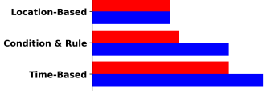
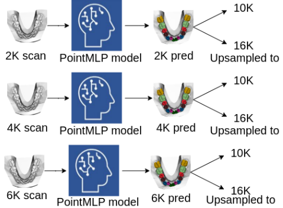

Publications

Comparative Analysis of OpenAI GPT-4o and DeepSeek R1 for Scientific Text Categorization Using Prompt Engineering
@article{maiti2025comparative,
title={Comparative Analysis of OpenAI GPT-4o and DeepSeek R1 for Scientific Text Categorization Using Prompt Engineering},
author={Maiti, Aniruddha and Adewumi, Samuel and Tikure, Temesgen Alemayehu and Wang, Zichun and Sengupta, Niladri and Sukhanova, Anastasiia and Jana, Ananya},
journal={arXiv preprint arXiv:2503.02032},
year={2025}
}

Evaluating the Suitability of Different Intraoral Scan Resolutions for Deep Learning-Based Tooth Segmentation
@article{weekley2025evaluating,
title={Evaluating the Suitability of Different Intraoral Scan Resolutions for Deep Learning-Based Tooth Segmentation},
author={Weekley, Daron and Duckworth, Jace and Sukhanova, Anastasiia and Jana, Ananya},
journal={arXiv preprint arXiv:2502.19515},
year={2025}
}

Development and evaluation of a deep learning model for oral soft and hard tissue diagnosis using synthetic image data generated by StyleGAN
@inproceedings{jana2024development,
title={Development and evaluation of a deep learning model for oral soft and hard tissue diagnosis using synthetic image data generated by StyleGAN},
author={Jana, Ananya and Jain, Vrinda and Oliveira, Abmael and Subhash, Hrebesh Molly and Metaxas, Dimitris},
booktitle={Computational Optical Imaging and Artificial Intelligence in Biomedical Sciences},
volume={12857},
pages={60--65},
year={2024},
organization={SPIE}
}

A Critical Analysis of the Limitation of Deep Learning based 3D Dental Mesh Segmentation Methods in Segmenting Partial Scans
@inproceedings{jana2023critical,
title={A Critical Analysis of the Limitation of Deep Learning based 3D Dental Mesh Segmentation Methods in Segmenting Partial Scans},
author={Jana, Ananya and Maiti, Aniruddha and Metaxas, Dimitris N},
booktitle={2023 45th Annual International Conference of the IEEE Engineering in Medicine & Biology Society (EMBC)},
pages={1--7},
year={2023},
organization={IEEE}
}

3D Tooth Mesh Segmentation with Simplified Mesh Cell Representation
@inproceedings{jana20233d,
title={3d tooth mesh segmentation with simplified mesh cell representation},
author={Jana, Ananya and Subhash, Hrebesh Molly and Metaxas, Dimitris},
booktitle={2023 IEEE 20th International Symposium on Biomedical Imaging (ISBI)},
pages={1--5},
year={2023},
organization={IEEE}
}

Scale-Aware Multi-Instance Learning for Early Prognosis of Subjects at Risk of Developing Hepatocellular Carcinoma
@inproceedings{jana2023scale,
title={Scale-Aware Multi-Instance Learning for Early Prognosis of Subjects at Risk of Developing Hepatocellular Carcinoma},
author={Jana, Ananya and Arunachalam, Ramanathan and Minacapelli, Carlos D and Catalano, Kaitlyn and Catalano, Carlos and Rustgi, Vinod and Metaxas, Dimitris},
booktitle={2023 IEEE 20th International Symposium on Biomedical Imaging (ISBI)},
pages={1--5},
year={2023},
organization={IEEE}
}

Automatic tooth segmentation from 3D dental model using deep learning: a quantitative analysis of what can be learnt from a single 3D dental model
@inproceedings{jana2023automatic,
title={Automatic tooth segmentation from 3d dental model using deep learning: a quantitative analysis of what can be learnt from a single 3d dental model},
author={Jana, Ananya and Subhash, Hrebesh Molly and Metaxas, Dimitris},
booktitle={18th International Symposium on Medical Information Processing and Analysis},
volume={12567},
pages={42--51},
year={2023},
organization={SPIE}
}

Global and local interpretation of black-box machine learning models to determine prognostic factors from early COVID-19 data
@inproceedings{jana2021global,
title={Global and local interpretation of black-box machine learning models to determine prognostic factors from early COVID-19 data},
author={Jana, Ananya and Minacapelli, Carlos D and Rustgi, Vinod and Metaxas, Dimitris},
booktitle={17th International Symposium on Medical Information Processing and Analysis},
volume={12088},
pages={75--84},
year={2021},
organization={SPIE}
}

Liver Fibrosis and NAS Scoring From CT Images Using Self-Supervised Learning and Texture Encoding
@inproceedings{jana2021liver,
title={Liver fibrosis and nas scoring from ct images using self-supervised learning and texture encoding},
author={Jana, Ananya and Qu, Hui and Minacapelli, Carlos D and Catalano, Carolyn and Rustgi, Vinod and Metaxas, Dimitris},
booktitle={2021 IEEE 18th International Symposium on Biomedical Imaging (ISBI)},
pages={1553--1557},
year={2021},
organization={IEEE}
}

Deep Learning based NAS Score and Fibrosis Stage Prediction from CT and Pathology Data
@inproceedings{jana2020deep,
title={Deep learning based NAS Score and fibrosis stage prediction from CT and pathology data},
author={Jana, Ananya and Qu, Hui and Rattan, Puru and Minacapelli, Carlos D and Rustgi, Vinod and Metaxas, Dimitris},
booktitle={2020 IEEE 20th International Conference on Bioinformatics and Bioengineering (BIBE)},
pages={981--986},
year={2020},
organization={IEEE}
}

Design and Validation of an Attention Model of Web Page Users
@article{jana2015design,
title={Design and validation of an attention model of web page users},
author={Jana, Ananya and Bhattacharya, Samit},
journal={Advances in Human-Computer Interaction},
volume={2015},
number={1},
pages={373419},
year={2015},
publisher={Wiley Online Library}
}